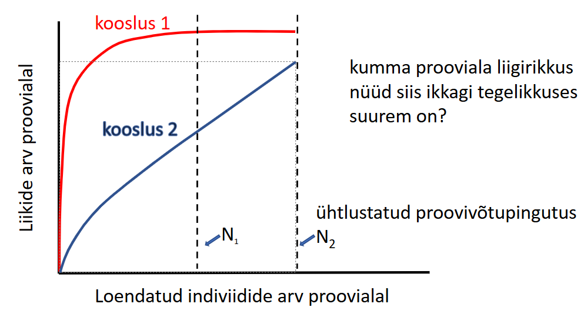
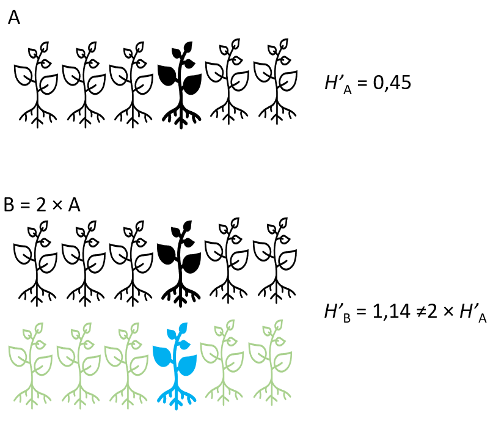

suppressWarnings(suppressPackageStartupMessages(library(tidyverse)))
# Example community
abundances <- c(50, 30, 15, 5)
props <- abundances / sum(abundances)
# Funktsioon Hilli arvu arvutamiseks
f_hill_number <- function(p, # p on liikide suhteliste ohtruste vektor,
q) { # q on Hilli arvu järk
if (q == 1) { # erijuht kui q -> 1
return(exp(-sum(p * log(p)))) # arvutame Shannoni eksponendi
} else {
return((sum(p^q))^(1 / (1 - q))) # arvutame Hilli arvu standardvalemiga
}
}
# Funktsioon koosluse põhjal erinevate Hilli arvude arvutamiseks
f_hill_df <- function(from = 0, # q parameetri vahemiku algus
to = 3, # q parameetri vahemiku lõpp
by = 0.05, # mis sammuga me q väärtuste jada loome
a) { # liikide ohtruste vektor
qs <- seq(from, to, by) # loome q väärtuste jada
p <- a / sum(a) # liikide ohtrused suhtelisteks ohtrusteks
t_df <- tibble(
q = qs,
D_q = map_dbl(qs, ~ f_hill_number(p, .x))
)
return(t_df)
}
# Arvutame Hilli arvud nelja erineva koosluse kohta
hill_df_1 <- f_hill_df(a = c(10, 10, 10, 10, 10)) # võrdsed ohtrused
hill_df_2 <- f_hill_df(a = c(10, 10, 10, 10, 10,
10, 10, 10, 10, 10)) # võrdsed ohtrused, 2x rohkem liike
hill_df_3 <- f_hill_df(a = c(40, 5, 5, 1, 1)) # selgelt domineeriv liik
hill_df_4 <- f_hill_df(a = c(40, 5, 5, 1, 1,
40, 5, 5, 1, 1)) # 2 selgelt domineerivat liiki, 2x rohkem liike
# Paneme tabelid kokku:
hill_df <- bind_rows(
hill_df_1,
hill_df_2,
hill_df_3,
hill_df_4,
.id = "kooslus"
) %>%
mutate(kooslus = recode(kooslus,
"1" = "vordne",
"2" = "2x_vordne",
"3" = "dominant",
"4" = "2x_dominant"))
# Joonistame
ggplot(hill_df, aes(x = q, y = D_q, colour = kooslus)) +
geom_line(linewidth = 1.2) +
labs(
x = "Hilli arvu järk q",
y = "Hilli arv (efektiivne liikide arv)",
colour = "Kooslus"
) +
theme_minimal() +
scale_colour_brewer(palette = "Dark2")Koosluste ja ökosüsteemide struktuur
1 Sissejuhatus
Ökoloogia üks põhiküsimusi on mõista, mis reeglite järgi komplekteeruvad või tekivad kooslused ja ökosüsteemid. Kooslus on kogum liikide populatsioone, kes ajas ja ruumis kooseksisteerivad ning üksteist mõjutavad, olles samal ajal mõjutatud ka keskkonnaparameetritest. Seega uurib koosluseökoloogia seda, kuidas need liikide kogumid looduses jaotuvad, mis neid ja nende koosseisu mõjutab (keskkond, omavahelised interaktsioonid).
Kooslusi võib defineerida erinevatel ruumi- ja organisatsioonilistel skaaladel, olenevalt uurimisküsimuse ulatusest. Näiteks võib kooslus olla parasvöötmeline niidukooslus, mille hulka kuulub liblikõieliste taimede ja nendega seotud mikroorganismide kooslus, mille hulka kuulub lämmastikku fikseerivate bakterite kooslus. Nende üksteise sees pesastunud (nested) tasemete uurimine võimaldab meil mõista ökoloogilisi protsesse erinevatel skaaladel.
2 Koosluste koosseisu mõjutavad protsessid

Koosluse kooseisu kujundavad mitmed protsessid:
Levimispiirangud: Liigid ei pruugi kooslusest puududa mitte seetõttu, et tingimused ei ole sobivad, vaid kuna nad ei ole kooslusesse jõudnud.
Abioitilised filtrid: Keskkonnaparameetrid (nt mullatüüp, niiskus, valgusrežiim) piiravad liikide hulka, kes antud kasvukohas füsioloogilises mõttes hakkama saavad (fundamentaalne nišš).
Biootilised interaktsioonid: Konkurents, mutualism, röövlus - piiravad (või soodustavad!) keskkonnaparameetritega sobivate liikide koosluses püsimist.
+ Liigiteke ja väljasuremine: Mõjutavad regionaalse liigifondi kujunemist evolutsioonilises ajaskaalas. Selleks, et liik saaks kuskil liigifondis olla, peab ta põhimõtteliselt olemas olema.
Need ökoloogilised ja evolutsioonilised protsessid tingivad mustreid (liigirikkuse gradiendid, suktsessioon, liigirikkuse-produktiivsuse korrelatsioon jne).
3 Koosluse koosseisu kirjeldamine
Koosluse koosseise võib kirjeldada ja võrrelda erineva detailsusastmega:
Liigirikkus
Liikide suhteliste ohtruste jaotus
Mitmekesisus
Liikide vaheldumine
Liikide suhteliste ohtruste vaheldumine
3.1 Liigirikkus, mitmekesisus
Liigirikkus (S) on kõige lihtsamini mõistetav koosluse kirjeldamise parameeter - koosluses esinevate liikide arv. Aga eks tal ole ka puudujääke, kas või liigi defineerimine - mis on liik? Samuti ei kirjelda liigirikkus kuidagimoodi seda, kuidas isendite arvukus koosluses jaotunud on.

Mitmekesisuse mõõdikud arvestavad lisaks liikide arvule ka liikide (suhtelisi) ohtrusi ja mõnel juhul ka liikide tunnuseid või fülogeneetilisi suhteid (funktsionaalne või fülogeneetiline mitmekesisus). Mitmekesisuse indeksid võimaldavad lisaks liikide arvule hinnata, kui ühtlaselt on eri liikide isendid koosluses jaotunud.
Kõige tavalisemad mitmekesisuse mõõdikud on
Shannoni indeks (H’; Shannon index, Shannon’s diversity index, Shannon-Wiener index) - on tundlik nii liigirikkuse kui liikide ohtruse ühtluse suhtes.
Formaalselt väljendab Shannoni indeks määramatust juhuslikult valitud isendi liigilise kuuluvuse ennustamisel ja on defineeritud sedasi:
\[ H' = -\sum_{i=1}^{S} p_i \ln(p_i) \]
Kus:
- H’ on Shannoni indeks,
- S on liigirikkus,
- pi on liigi i suhteline ohtrus koosluses,
- ln on naturaallogaritm.
Gini-Simpsoni indeks (1 - λ; Gini-Simpson index) - annab suurema kaalu tavalisematele liikidele ning peegeldab eelkõige dominantsete liikide ohtrust.
Formaalselt väljendab Gini-Simpsoni indeks tõenäosust, et kaks juhuslikult kooslusest valitud isendit on eri liigist ja on defineeritud sedasi:
\[ 1 - λ = 1 - \sum_{i=1}^{S} p_i^2 \]
Kus:
1 - λ on Gini-Simpsoni indeks),
S on liigirikkus,
pi on liigi i suhteline ohtrus koosluses.
NB! Simpsoni indeks (λ; D, Simpson index) kirjeldab dominantsi, mitte mitmekesisust! See tähendab, Simpsoni indeks kirjeldab tõenäosust, et kaks juhuslikult valitud isendit on samast liigist, ehk kui Simpsoni indeks läheneb 1, on koosluses üks dominantne liik ja mida madalam on Simpsoni indeks, seda ühtlasem on koosluse liigiline koosseis.
Pange alati tähele, mida te arvutate!
Olgu siinkohal öeldud, et tegelikult ei kirjelda ei Shannoni indeks ega Gini-Simpsoni indeks tõelist mitmekesisust: vabatahtlikku lisalugemist mitmekesisusest - lugeda mõistlikkuse piirini.
3.2 Koosluse kirjeldamise täielikkus
Praktilises mõttes on liigirikkuse (ja sellest johtuvalt tegelikult ka mitmekesisuse) kirjeldamise puudujäägiks ka proovivõtu täielikkus (sampling completeness). Tavaliselt loendatakse ökoloogiliste uurimistööde käigus aja ja raha piiratuse tõttu liike teatud kindla pingutusega (olgu see pingutus kas taimede loendamiseks kulunud aeg, DNA sekveneerimissügavus ehk ühest proovist järjestatud DNA-lõikude arv, filtrist läbi lastud jõevee maht vms). Olenevalt liikide ühtlusest võime teatud ühtlase proovivõtupingutuse tulemusena saada ühest punktist parema kirjelduse kui teisest.

3.3 Mõõdikute intuitiivsus
Shannoni ja Gini-Simpsoni (ja paljude teiste) indeksitega on veel üks iseloomulik häda. Oletagem, et (Shannoni näitel) meil on kahe võrdse ohtrusega liigiga kooslus A ning meil on kooslusest A kaks korda mitmekesisem kooslus B, mis on tekitatud sedamoodi, et, “korrutada” kooslus A kahega. Seega on meil kooslus A kahe võrdse ohtrusega liigiga ning kooslus B nelja võrdse ohtrusega liigiga. Kui arvutada mõlema koosluse kohta Shannoni indeks H’, ilmneb, et \(H'_B = 2H'_A\).

Kõik väga ilus.
Kui aga ohtrused pole võrdsed

ilmneb, et \(H'_B \neq 2H'_A\).
Miks see meid huvitab? Sest et kui kaks korda mitmekesisem kooslus (koosluses B oli mõlemal juhul kaks korda rohkem samade ohtrussuhetega liike kui koosluses A) ei ole alati kaks korda suurema mitmekesisuse indeksiga, siis me ei saa erineva liigirikkusega koosluseid lineaarsel skaalal võrrelda!
Kui võtta arvesse ka eelpool mainitud tõsiasja, et meile tuttavad mitmekesisuse mõõdikud ei kirjelda (vähemalt intuitiivselt) tõelist mitmekesisust, tuleb appi võtta transformatsioon ja ekstrapolatsioon.
3.4 Hilli arvud
Hilli arvud (qD;Hill numbers, effective number of species) on mitmekesisusemõõdikute perekond, mille abil on võimalik mitmekesisust väljendada intuitiivselt (ja matemaatiliselt korrektsemalt - nad on additiivsed(?) (doubling property)ehk algset kooslust kahekordistades on ka indeksi väärtus kaks korda suurem). Hilli arvude omapäraks on parameeter q, mis väljendab dominantsetele liikidele antavat kaalu mitmekesisuse arvutamisel.
\[ ^qD = \left( \sum_{i=1}^{S} p_i^q \right)^{\frac{1}{1 - q}}, \quad q \geq 0,\ q \neq 1 \]
Kus:
qD on Hilli arv järku q (Hill number of order q),
S on liigirikkus,
pi on liigi i suhteline ohtrus koosluses,
q on Hilli arvu järk (order q)
Kui \(q \to 1\), siis:
\[ ^1D = \exp\left(-\sum_{i=1}^{S} p_i \ln p_i \right) \]
Hilli arv kirjeldab, mitu võrdse ohtrusega liiki peaks koosluses olema selleks, et liikide keskmine suhteline ohtrus võrduks kirjeldatavas koosluses mõõdetuga. Ehk teisisõnu, Hilli arv näitab, mitu võrdse ohtrusega liiki annaks sama mitmekesisuse väärtuse.
Juhtumisi:
kui \(q = 0\), siis
\(^0D = S\),
ehk liigirikkus S,kui \(q \to 1\), siis
\(^1D = \exp\left(-\sum_{i=1}^{S} p_i \ln p_i \right) = \exp(H')\),
ehk Shannoni eksponent exp(H’) (Exponent of Shannon),kui \(q = 2\), siis
\(^2D = \frac{1}{\sum_{i=1}^{S} p_i^2} = \frac{1}{λ}\),
ehk Simpsoni pöördindeks 1/λ (Inverse Simpson).
Mida kõrgem on parameeter q, seda vähem tundlik on indeks haruldastele liikidele!
Hilli arvud:
koondavad levinud mitmekesisuse mõõdikud ühte süsteemi
on intuitiivselt tõlgendatavad
on võrreldavad erinevatel skaaladel
on paindlikud - parameetrit q võib vastavalt küsimusele muuta
3.4.1 Proovime järele
Arvutame kahe erineva koosluse Hilli arvud 0 … 3